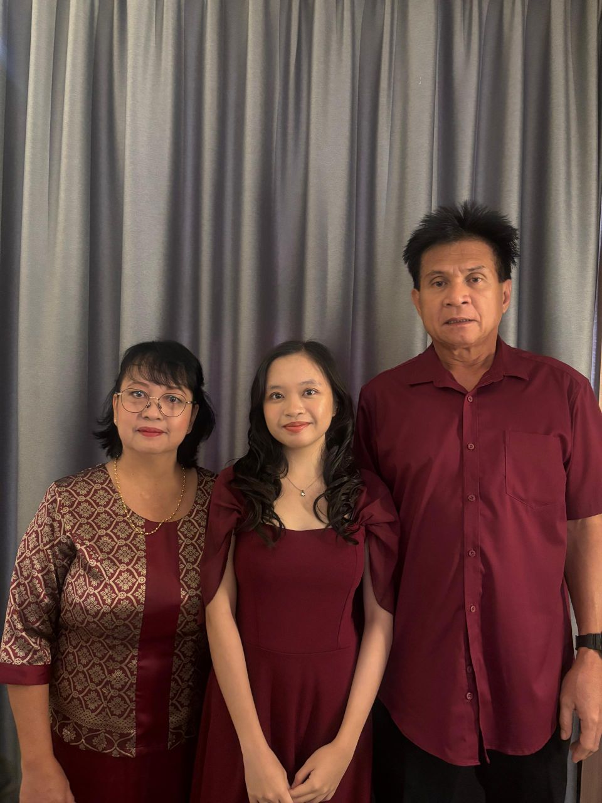
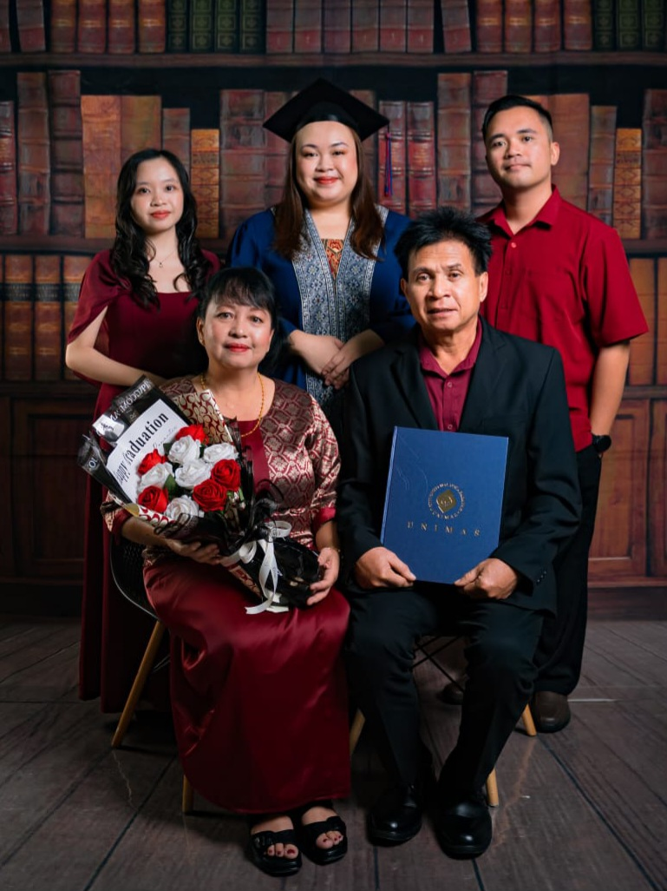
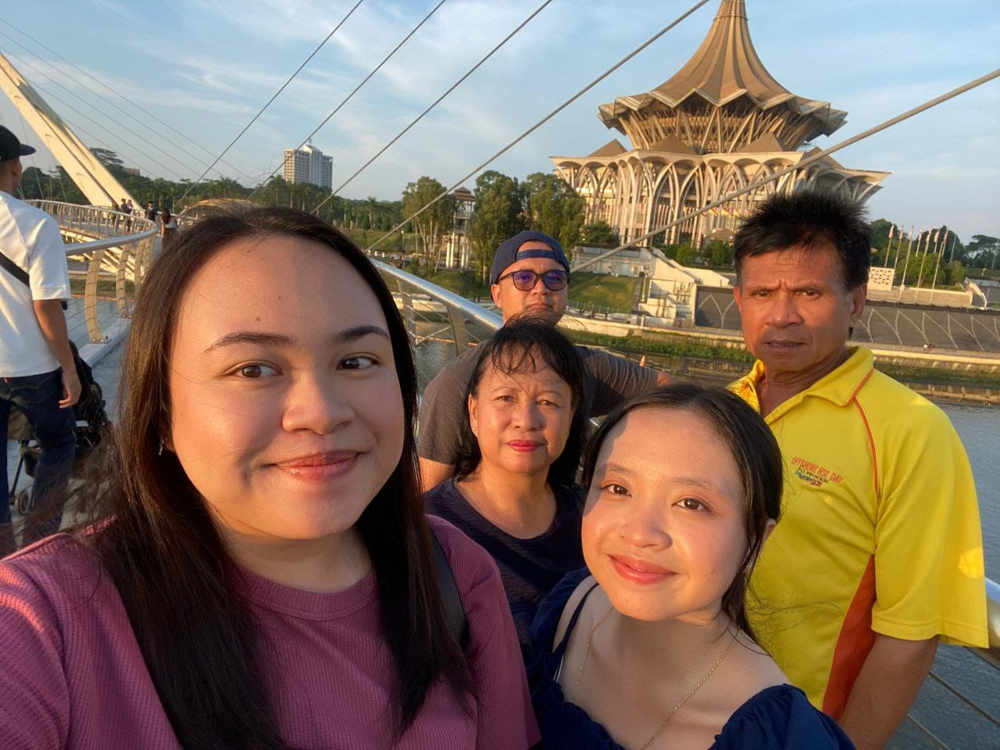
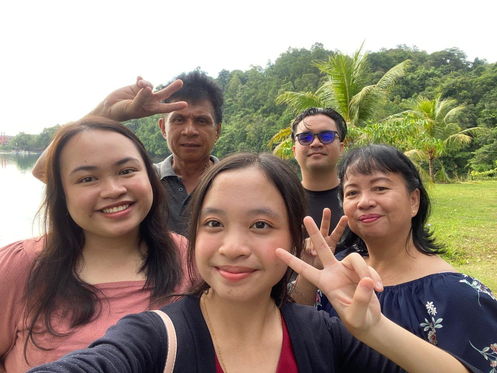

THE PEOPLE CLOSEST TO HER HEART
Her Family.
Some bonds are woven so tightly into a person’s life that you cannot tell their story without them. Get to know the people who have been her safe place, her quiet strength, and the reason every chapter feels so full of love.
HER PEOPLE
The Ones She Calls Family

Her Mom & Dad
The two people who have been part of her life since the beginning. Their love, guidance, and support have helped shape the person she is today.

The Whole Family
A collection of people who share laughter, memories, and special moments together. They make her feel that she will always have a place to call home.
LITTLE MOMENTS, BIG MEMORIES
Memories Worth Keeping
From celebrations and gatherings to ordinary days spent together, these are the moments that become memories she will look back on with love.


HER STORY, THEIR LOVE
Some of her favourite memories begin at home.
The people, the laughter, the lessons, and the memories she carries with her are all part of the story that makes her.
Back To HERSTORY →